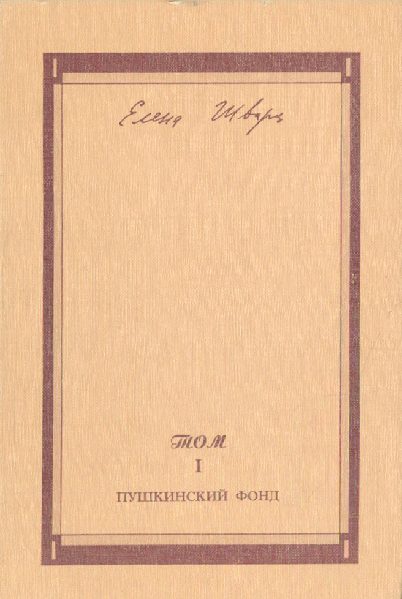
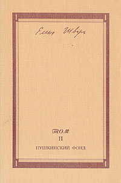
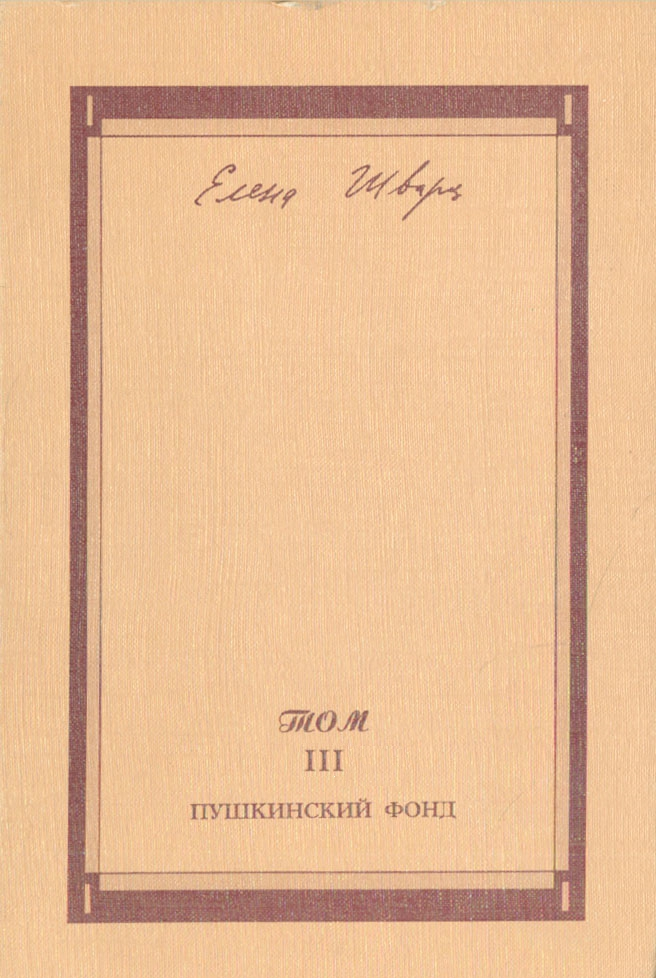
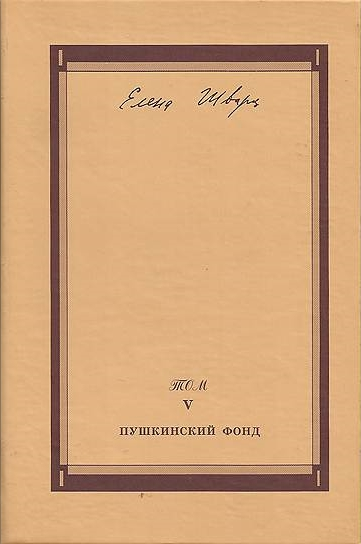
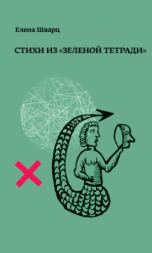
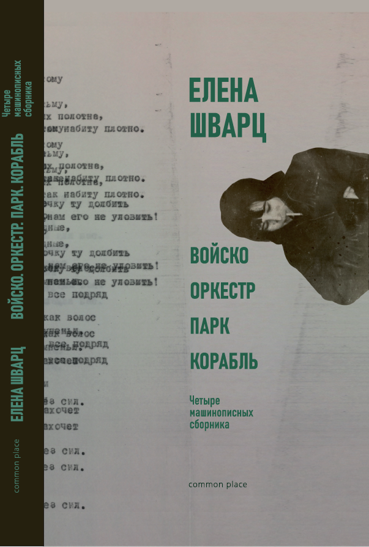
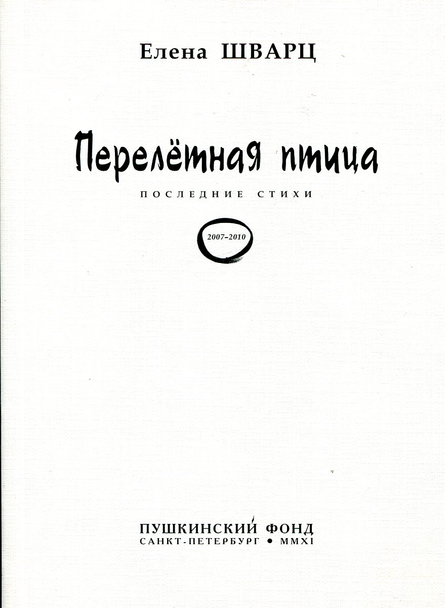
 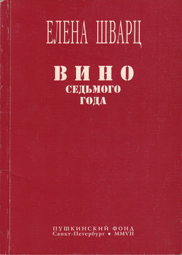
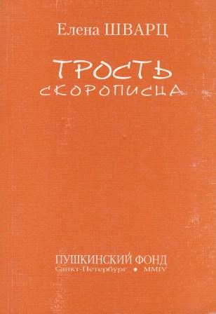
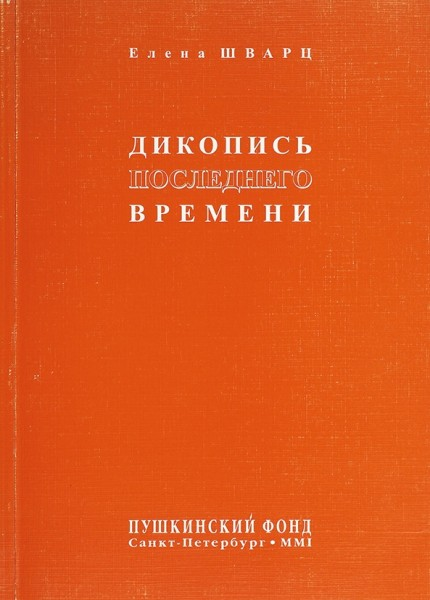
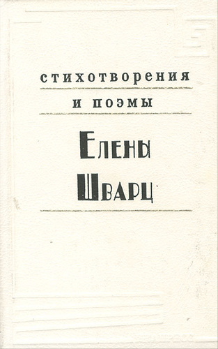
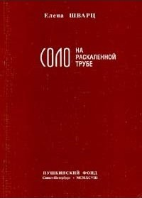
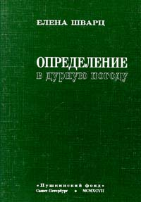
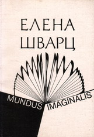
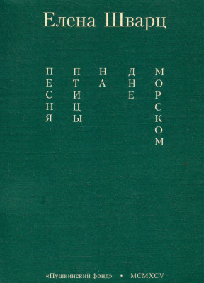
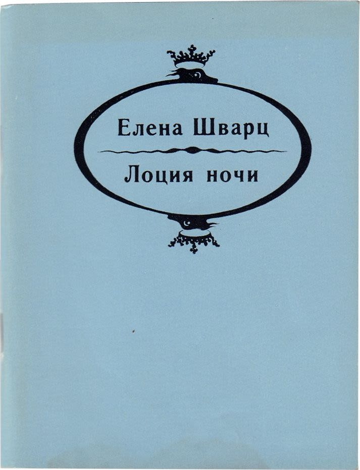
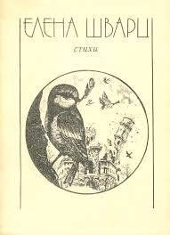
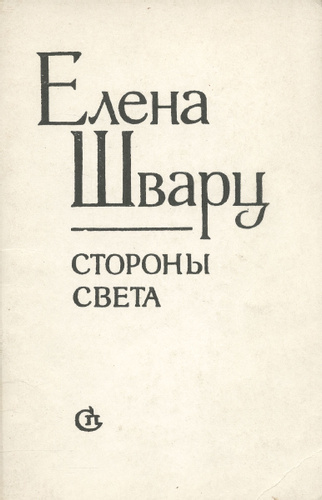
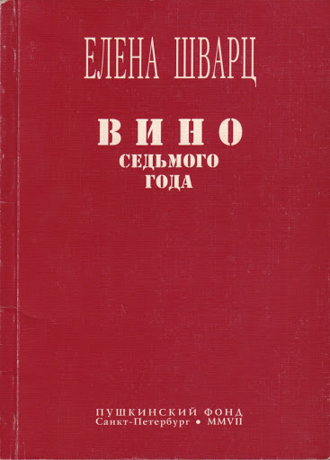
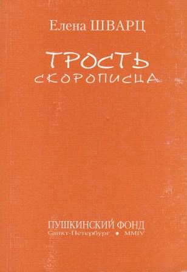
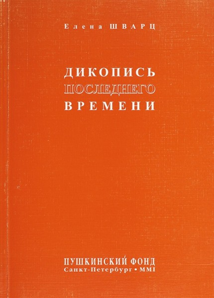
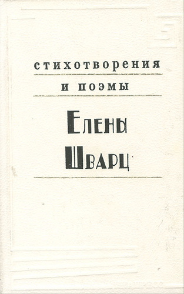
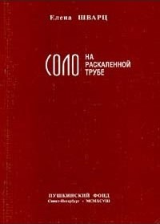
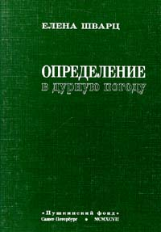
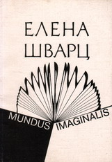
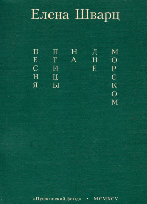
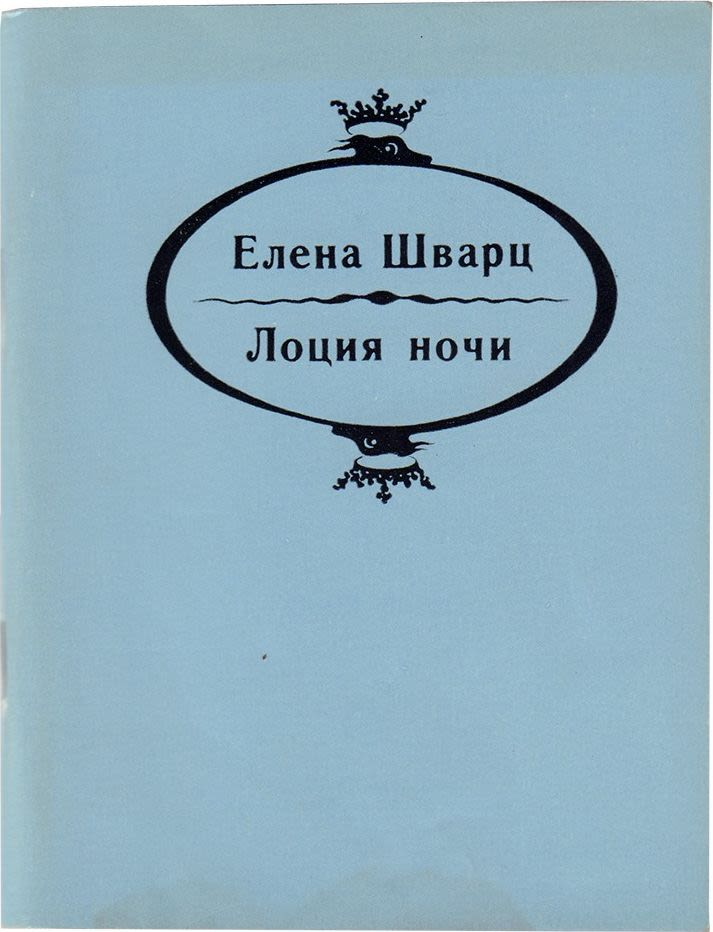
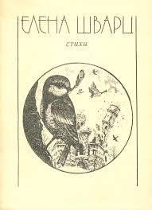
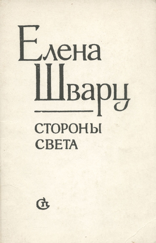
 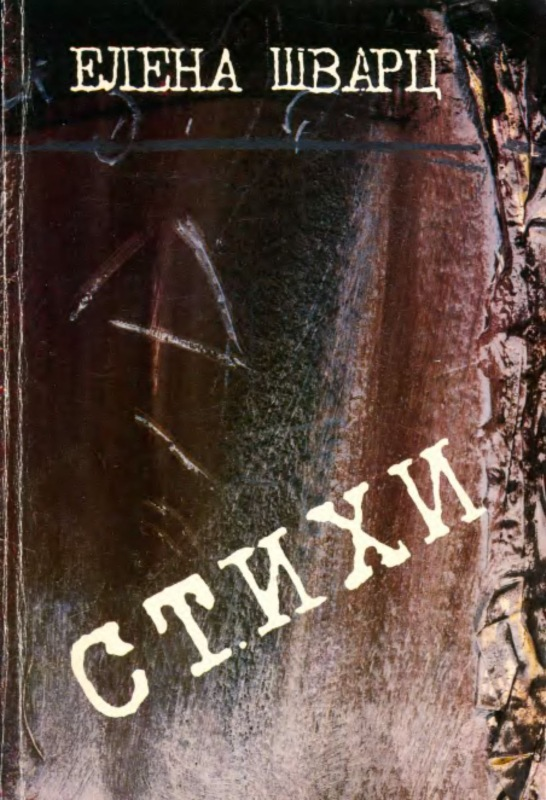
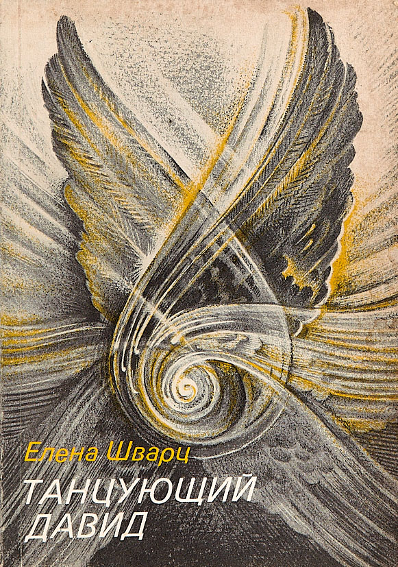
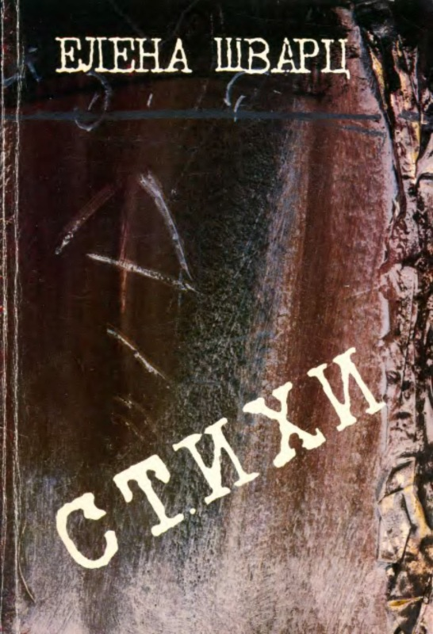
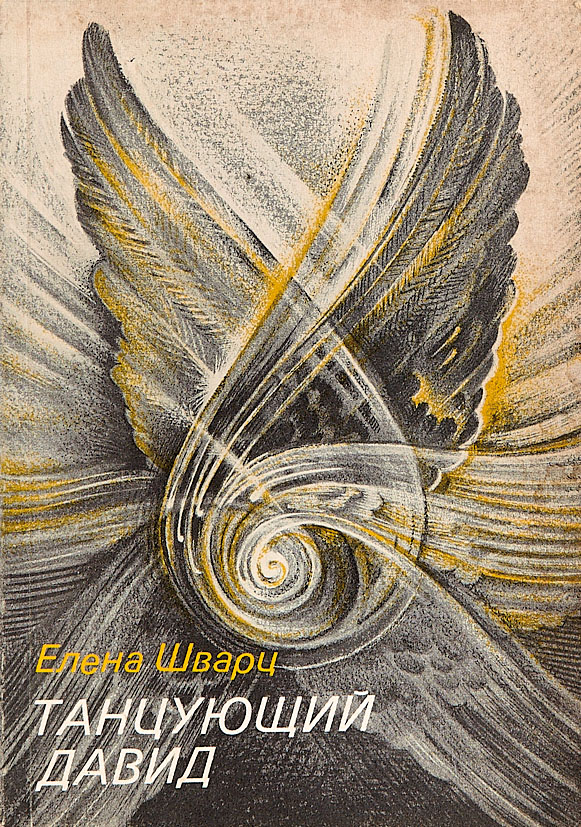
Собрание сочинений, Том I
СПб.: Пушкинский фонд, 2002.
Собрание сочинений, Том II
СПб.: Пушкинский фонд, 2002.
Собрание сочинений, Том III
СПб.: Пушкинский фонд, 2008.
Собрание сочинений, Том IV
СПб.: Пушкинский фонд, 2008.
Собрание сочинений, Том V
СПб.: Пушкинский фонд, 2013.
Стихи из "Зеленой тетради"
СПб.: Порядок слов, 2018.
Войско, Оркестр, Парк, Корабль. Четыре машинописных сборника
М.: Common place, 2018.
Перелетная птица (последние стихи)
СПб.: Пушкинский фонд, 2011.
Габриэле Д’Аннунцио. Крылатый циклоп
СПб.: «Вита Нова», 2010.
Вино седьмого года
СПб.: Пушкинский фонд, 2007.
Трость скорописца
СПб.: Пушкинский фонд, 2004.
Видимая сторона жизни
СПб.: Лимбус, 2003.
Дикопись последнего времени
СПб.: Пушкинский фонд, 2001.
Стихотворения и поэмы
СПб.: ИНАПРЕСС, 1999.
Соло на раскаленной трубе
СПб.: Пушкинский фонд, 1998.
Западно-восточный ветер. Новые стихотворения
СПб.: Пушкинский фонд, 1997.
Определение в дурную погоду
СПб.: Пушкинский фонд, 1997.
Mundus Imaginalis: Книга ответвлений
СПб.: Эзро, 1996.
Песня птицы на дне морском
СПб.: Пушкинский фонд, 1995.
Лоция ночи. Книга поэм
СПб.: Советский писатель, Санкт-Петербургское отделение, 1993.
Стихи
Л.: Ассоциация «Новая литература», 1990.
Стороны света
Л.: Советский писатель, Ленинградское отделение, 1989.
Труды и дни Лавинии, монахини из ордена Обрезания Сердца
Ann Arbor: Ardis Publishers, 1987.
Стихи
Л. Париж-Мюнхен: Веседа, 1987.
Танцующий Давид
N.Y.: Russica Publishers, 1985.